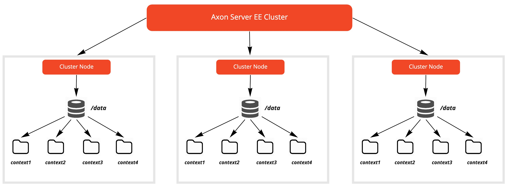

Multi-Context
| The Developer and Starter plans only support 1 (non-admin) context. |
To recap the definition as we have seen in the clustering section, contexts allow for strong separation of data without requiring deploying and managing full instances.
An Axon Server cluster can be setup to store events for multiple contexts. Each context has it own set of files (containing Event/Snapshot data) stored in a separate directory. Axon Server will replicate the context data to a number of nodes depending on the replication group the context is assigned to. When you are creating a context you can either add it to an already existing replication group, or create a new replication group for this context. More on replication groups can be found in the replication groups section.
Each context has a separate physical directory on each of the member nodes. This directory is by default determined by the axoniq.axonserver.events.storage and axoniq.axonserver.snapshot.storage properties. Each context getting a subdirectory below the location specified by the property. Upon creation of a context you can specify a different location.
A depiction of multiple registered contexts within an Axon Server EE cluster is shown below

The clustering section details the creation of the admin and default contexts_ when a new Axon Server cluster is created. The admin_ context is used to process all configuration changes in Axon Server, so it contains the master configuration from which all contexts get their information. The _admin context does not have an event store and the configuration information is stored in a control database. The default context is the context used by clients when they have not specified any context information. In case you would like to create a cluster without creating a default context, it is recommended to use the Automatic-Initialization feature where you can control explicitly which contexts can be created or not.
When you create a context, there are a number of default properties that you can override, specifically for the context. These are:
| property | default value | description |
|---|---|---|
event.storage |
[axoniq.axonserver.event.storage]/[context-name] |
Location where the event store’s event information will be stored |
event.segment-size |
250 MB |
Size of the event store’s event segments |
event.index-format |
JUMP_SKIP_INDEX |
Index type used for the events in this context (JUMP_SKIP_INDEX or BLOOM_FILTER_INDEX |
event.max-bloom-filters-in-memory |
100 |
Number of bloom filters for events to be kept in memory (only applicable if index is BLOOM_FILTER_INDEX) |
event.max-indexes-in-memory |
50 |
Number of index files for events to be kept in memory |
event.retention-time |
7 d |
Retention time for the events in the primary locations (if secondary location specified) |
snapshot.storage |
[axoniq.axonserver.snapshot.storage]/[context-name] |
Location where the event store’s event information will be stored |
snapshot.segment-size |
250 MB |
Size of the event store’s snapshot segments |
snapshot.index-format |
JUMP_SKIP_INDEX |
Index type used for the snapshots in this context (JUMP_SKIP_INDEX or BLOOM_FILTER_INDEX |
snapshot.max-bloom-filters-in-memory |
100 |
Number of bloom filters for snapshots to be kept in memory (only applicable if index is BLOOM_FILTER_INDEX) |
snapshot.max-indexes-in-memory |
50 |
Number of index files for snapshots to be kept in memory |
snapshot.retention-time |
7 d |
Retention time for the snapshots in the primary locations (if secondary location specified) |
Index formats
As of version 4.4, Axon Server has a new format for the index of events and snapshots, called JUMP_SKIP_INDEX. This is the default format for all contexts that are created from this version onwards. This index format uses a global index to locate the last event for a specific aggregate, and maintains per segment per aggregate the location of the previous event. It improves the efficiency in looking up aggregates that are distributed over segments that are further apart. For instance if you have 2000 event segments and an aggregate has events in segment 1500, 1000, and 500, using this index, Axon Server will find the latest event using the global index, and then from the index for segment 1500 that the previous event is in segment 1000. This prevents checking (the indexes of) all the files in between. When using this index, Axon Server will no longer create bloom filter files. For existing contexts the index format will remain BLOOM_FILTER_INDEX.
Usage in Axon Framework
After a context has been set up in Axon Server, Axon Framework applications can connect to it by setting the axon.axonserver.context property when using Spring Boot, or setting the defaultContext on the builder of AxonServerConnectionManager that is passed to the event store.
If you are not using Spring Boot, you likely also have to register the AxonConfiguration as a component on the Configurer.
Using something like AxonServerConfiguration.builder().context(otherContext).build() to use a different context.
Note that depending on message source configuration, other contexts may be used besides the default.
Sending messages to other contexts
All messages in that application will be sent and received only from the default context, unless specified otherwise.
In order to send commands and queries to a different context, you can provide a TargetContextResolver to the Configurer as follows:
-
Axon Configurer
-
Spring Boot
public class Configuration {
public void configuring() {
Configurer configurer = DefaultConfigurer
.defaultConfiguration()
.registerComponent(TargetContextResolver.class, configuration ->
message -> message.getPayloadType()
.getName()
.startsWith("com.context.booking") ? "booking" : "payment"
);
}
}@Configuration
public class Configuration {
@Bean
public TargetContextResolver<?> targetContextResolver() {
return message -> message.getPayloadType().getName().startsWith("com.context.booking") ? "booking" : "payment";
}
}Reading events from multiple contexts
You can stream events from multiple contexts in the same processor. This is described in the Streaming Events Processors' Multiple event sources section.
Multi-tenancy
When an application handles multiple tenants, it might make sense to create separate store per tenant. Handling multiple tenants needs additional infrastructure, such as duplication of the event processor for each tenant, as well as datasource configuration. For this we have created the Multi-Tenancy extension to Axon Framework, that takes care of this infrastructure for you.
Pre-4.4 Context Deletion
Note that when you delete an existing context with the preserve data option and then recreate it, without specifying the index format, Axon Server will use the JUMP_SKIP_INDEX format. This means that it will create a new index for the existing data, if the old format was BLOOM_FILTER_INDEX. Depending on the size of the event store this can take a long time.
Context maintenance
The operational maintenance of contexts within an Axon Server EE cluster can be done via any one of the following provided utilities:
-
CLI (axonserver-cli.jar) provided by Axon Server
-
UI Console of Axon Server
-
REST API provided by Axon Server
Let us deep dive into these capabilities in more detail.
Command-line interface
Axon’s command-line utility (axonserver-cli.jar - part of the Axon Server distributable) offers the following options to operate and maintain contexts
Creating contexts
The register-context command helps in the registration and creation of a new context. A sample of the command with the mandatory parameters is depicted below
$ java -jar ./axonserver-cli.jar register-context -S http://[node]:[port] -c [context-name] -n [members]This will create a new replication group with the name of the context, with the specified member nodes, and creates a context in this replication group.
Another example:
$ java -jar ./axonserver-cli.jar register-context -S http://[node]:[port] -c [context-name] -g [replication-group] -prop event.storage=[location] -prop snapshot.storage=[location]This creates a new context in an already existing replication group. Event and snapshot files are stored in the specified location.
Mandatory parameters
-
-c refers to the context name. The context name must match the following regular expression "[a-zA-Z][a-zA-Z_-0-9]*", so it should start with a letter (uppercase or lowercase), followed by a combination of letters, digits, hyphens and underscores.
Optional parameters
-
-S if not supplied connects by default to http://localhost:8024. If supplied, it should be any node serving the _admin context
-
-g refers to the name of the replication group where the context will be added to
-
-n refers to the comma separated list of node names that should be members of the new context. This parameter registers them as "PRIMARY" member nodes of that context
-
-a refers to the comma separated list of node names that should be "ACTIVE_BACKUP" member nodes of that context
-
-m refers to the comma separated list of node names that should be "MESSAGING_ONLY" member nodes of that context
-
-p refers to the comma separated list of node names that should be "PASSIVE_BACKUP" member nodes of that context
-
-s refers to the comma separated list of node names that should be "SECONDARY" member nodes of that context
-
-prop refers to properties that can be set for the new context. The value should be in the form \=\
-
-t refers to the access token to authenticate at server
Deleting contexts
The delete-context command helps in the deletion of a context and its associated data from all member nodes of that context. A sample of the command with the mandatory parameters is depicted below
$ java -jar ./axonserver-cli.jar delete-context -S http://[node]:[port] -c [context-name]Mandatory parameters
-
-c refers to the context that needs to be deleted
Optional parameters
-
-S if not supplied connects by default to http://localhost:8024. If supplied, it should be any node serving the _admin context
-
-t refers to the access token to authenticate at server
-
–preserve-event-store" option to keep the event store files when deleting the context (Axon Server deletes the event files by default)
Adding a node to a Context
The add-node-to-context command helps in the registration of a new member node creation of an existing context. A sample of the command with the mandatory parameters is depicted below
$ java -jar ./axonserver-cli.jar add-node-to-context -S http://[node]:[port] -c [context-name] -r [role of the node] -n [node name]Mandatory parameters
-
-c refers to an existing context
-
-n refers to the node name that should be a member of this context
-
-r refers to the role of this node within the context
Optional parameters
-
-S if not supplied connects by default to http://localhost:8024. If supplied, it should be any node serving the _admin context
-
-t refers to the access token to authenticate at server
Deleting a node from a context
The delete-node-from-context command helps in the deletion member node from an existing context. A sample of the command with the mandatory parameters is depicted below
$ java -jar ./axonserver-cli.jar delete-node-from-context -S http://[node]:[port] -c [context-name] -n [node name]Mandatory parameters
-
-c refers to an existing context
-
-n refers to the node name that should no longer be a member of this context
Optional parameters
-
-S if not supplied connects by default to http://localhost:8024. If supplied, it should be any node serving the _admin context
-
-t refers to the access token to authenticate at server
-
–preserve-event-store removes the node from the context but leaves the event store files on that node.
List all contexts
The contexts command lists down all the contexts registered within the cluster, including its name, the leader member node of the context and all the member nodes within the context
$ java -jar ./axonserver-cli.jar contextsOptional parameters
-
-o json will display the output in a JSON format